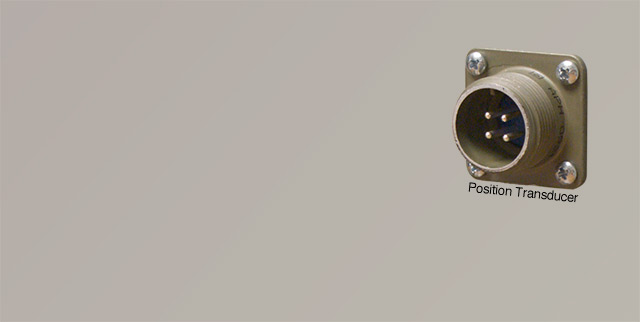
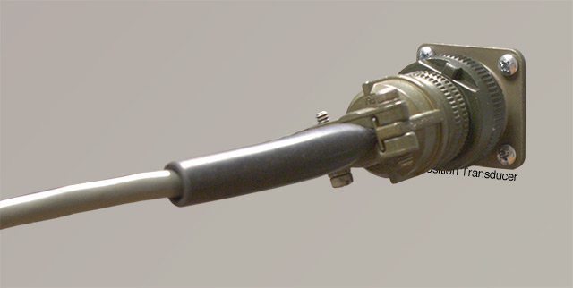
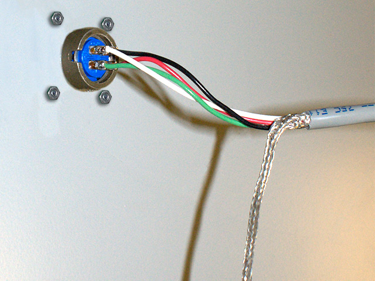

Both of the connectors on the cable for the position transducer are identical so it doesn't matter which you connect to the sensor.
One end screws into the four pin plug on the top of the Visi-Trak® position transducer

The other end screws onto a similar four pin plug on the FasTrak2 Portable, as shown in the following two photos.
 If you want to be able to connect the FasTrak2™ Portable to plugs on the main panel of the die cast machine you will need to plug one end of the cable into the four pin plug on the top of the Visi-Trak® position transducer, as shown below (this is the same as the previous method).
The other end of this cable will not have a connector on it. Instead you must solder the wires to the four pin plug that is mounted on the main panel of the die cast machine as shown in the following photo. This view shows the back of the plug that protrudes into the inside of the panel.

The cable from the FasTrak2™ Portable will have male 4 pin connectors on each end and will connect the four pin plug on the main panel to the four pin plug on the FasTrak2™ Portable.